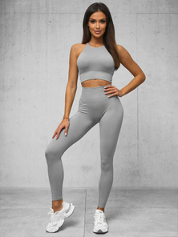
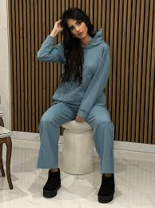
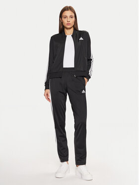
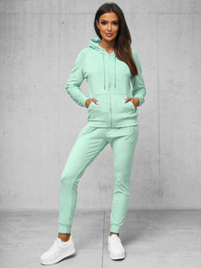
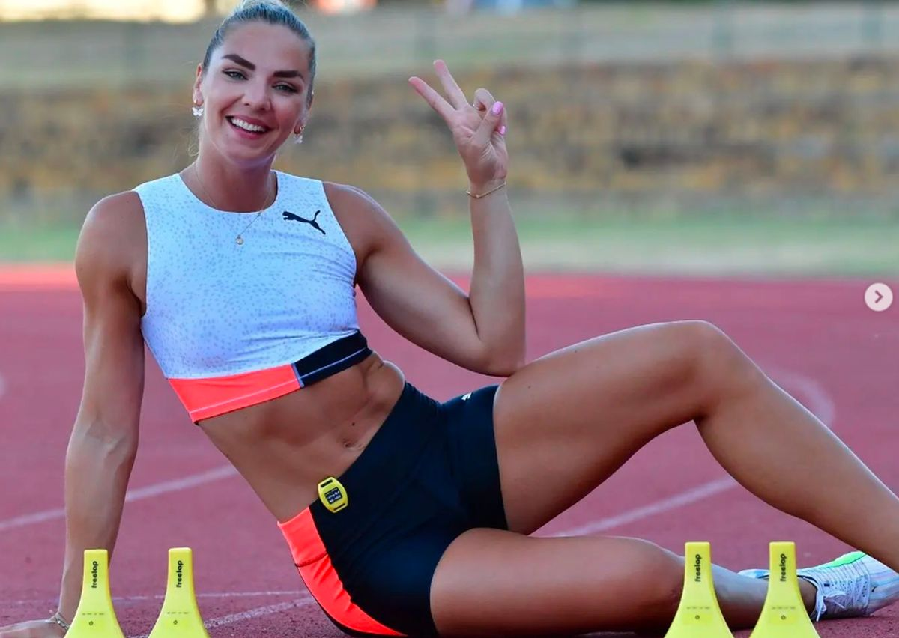
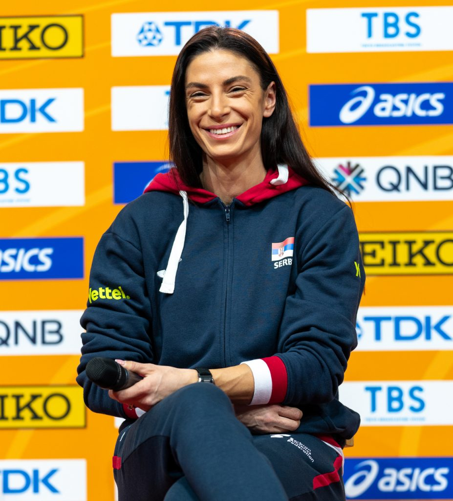

"SUMÉ mi daje slobodu pokreta i osjećam se samouvjereno svaki put kad treniram."
Na početku brenda sportski stil nije bio dostupan kod nas, te takve komade nismo proizvodili. Javila se potreba onda kad nismo uspjeli pronaći za space-between u trgovini ono što nam je potrebno za odrađivanje treinga. Tad smo napravili naša prva dva sportska kompleta koja su i dalje u prodaji i jako su traženi.

Komplet sa tajicama koje su duge. Praktičan je za hladnije dane. Dužina odgovara za cure do 180cm.
Komplet pogodan za ljetne, tople dane. Tajice su dužine iznad koljena i nije bitna visina cure.

Kupi odmahTamnoplava trenerka pogodna za sportske, ali i casual događaje. Ima blago široke nogavice, te je ugodna za nošenje.

Kupi odmahKlasična crna trenerka kou žene biraju da nose dok šetaju, trče ili obavljaju kupnju..

Kupi odmahPogodna za smjelije koji biraju da budu drugačiji. Bojom mami pažnju, a udobnost je prioritet.
Iskustva profesionalnih sportistkinja koje nose naše komade.
"SUMÉ mi daje slobodu pokreta i osjećam se samouvjereno svaki put kad treniram."

"Materijali su lagani, a dizajn prati moj ritam. SUMÉ je moj izbor za sve važne mečeve."

"Nije samo odjeća – to je podrška. SUMÉ mi pomaže da se osjećam spremno."